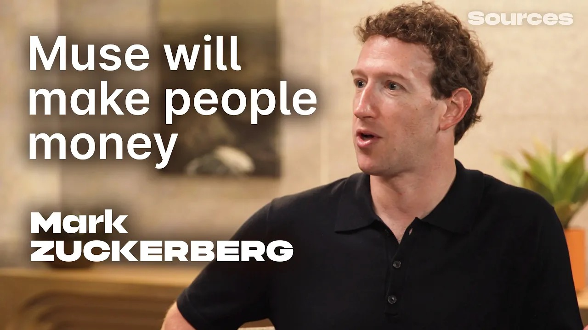

목소리 · SOURCES PODCAST
마크 저커버그 인터뷰
Muse와 개인 초지능

마크 저커버그가 진행자 알렉스 히스와 Muse의 활용과 가격, 개인 에이전트의 프라이버시, AI 연구와 안전을 이야기한다. 개인 초지능을 널리 보급하려는 Meta의 구상과 그에 따르는 질문을 읽는다.
- 영상 길이
- 1:10:10
- 공식 챕터
- 11개 장
- 한국어 번역 전사
- 264개 문단
CARROT CAVE INSIGHTS
편집자 인사이트 — 아래는 인터뷰를 읽고 정리한 요약·해석이며, 번역 전사나 직접 인용이 아닙니다.
출처와 번역 안내
- 원제: Mark Zuckerberg on how Meta's Muse AI agent will make people money
- 인터뷰이: 마크 저커버그(Mark Zuckerberg) · Meta
- 진행자: 알렉스 히스(Alex Heath) · Sources Podcast
- 게시: Sources Podcast, . 영상 길이 1:10:10(4210초).
- 공식 출처: YouTube 원본 인터뷰. 각 장과 문단의 타임코드는 원본의 해당 시각으로 연결됩니다.
- 작성 방법: 저장된 YouTube 영어 자동자막 2145개 cue 전체를 원래 순서대로 264개 문단으로 정리해 한국어로 번역했습니다. 원본의 공식 11개 챕터 제목을 번역하고 경계를 유지했으며, 경계에 걸친 문단은 시작 시각을 기준으로 배치했습니다.
- 화자 표시: 자동자막에 신뢰할 만한 화자 구분 정보가 없어 개별 발언에 화자를 임의로 배정하지 않았습니다. 참여자 이름은 인터뷰 정보에만 표시합니다.
- 포함 범위: 도입·본 대화·스폰서 광고를 포함한 전체 자동자막입니다. 자막 범위는 0.32초부터 4192.799초(1:09:52.799)까지입니다. 마지막 자막 이후 영상 끝 4210초(1:10:10)까지는 음성 확인에서 추가 발화가 없는 무음 구간으로 확인했습니다.
- 자료: 한국어 번역 전사 (.json) · 영어 자동자막 원자료 (.json)
전체 한국어 번역 전사
자동자막 번역의 한계: 공식 축자 전사나 검증된 화자별 대화록이 아닙니다. 영어 자동자막의 오인식·누락·중복, 고유명사와 문장 경계 오류가 번역에 남아 있을 수 있습니다. 원자료의 모든 cue를 포함했다는 뜻이지 모든 발화의 정확성을 보증한다는 뜻은 아닙니다. 스폰서 문구는 원영상의 일부이며 당근동굴의 추천이 아닙니다. 인용 전 원영상의 해당 시각을 확인해주세요.
한국어 번역 전사 264개 문단을 불러오는 중입니다…
번역 전사를 불러오지 못했습니다. 새로고침하거나 위의 공식 영상·자료 다운로드 링크를 확인해주세요.